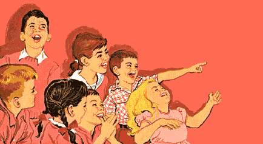

Silly is silly. "silly = silly" We are silly.
 One day, a silly man named Joe went down from his house to the local diner. He ordered soup for breakfast. Then, he ordered eggs for lunch. Finally, he ordered a sandwich for dinner. The total for the food was 17.50. Joe said that he had no money. The cook said that Joe would have to work the money off. Joe said he would rather go to prison than work off the debt.
The cook said he would call the police, and dialed 911. Joe ran out of the diner, and into a portal to the next dimension. Joe became a pile of meat gel, then he teleported into the mayonnaise dimension. The problem is, he needs bread to complete his sandwich, which he didn't get because he didn't have money. Then, Walter pulled out two slices of bread and ate Joe.
While Joe was being digested, he thought to himself "This is a very bad day." The next day, the police found the portal and went through it, but they melted into meat, but they dropped their guns, and shot Meat-Joe. But Meat-Joe was unharmed because he was a sandwich inside of Walter.
Next, Walter ate the police, and said "Har Har Har, you cannot defeat me." Walter's brother White appeared and tried to fight Walter for Meat-Joe. White died after being hit 384 times. He then turned into a tesseract and died, and Walter ate him. Then, the portal malfunctioned and sucked everyone into Walter's mouth.
As it turns out, Walter is the commander of a legion of 4D Ascended beings. He decided it would be a good idea to invade every other dimension. Even though 5D beings have more dimension(sic) than 4D, Walter is a amazing commander and his troops are Ascended Beings. They defeated the 5D beings and consumed them. Then they repeated this for ever other dimension.
After doing this, Walter decided to play a round of 5D Chess with Multiverse Time Travel. He defeated his opponent, and then decided to play the game "Breaking Bad" for the 3DS. Meat-Joe sabotaged his game by using his MT-12 100-mm anti-tank gun, thus destroying Walter's 3DS. Walter decided to use the Intercontinental Ballistic Missile Gambit, thus destroying Meat-Joe's 100-mm anti-tank gun, and beginning a conflict that would end the peace established by Walter's conquest of the other dimension, and causing fighting to last for billions of years to come.
Billions of years later, Walter finally defeated Meat-Joe but only after many hard-fought battles with millions of casualities(sic). Walter decided to have Meat-Joe put on trial for war crimes. Meat-Joe's was convicted of war crimes, and excuted(sic) because he caused billions of civilian casualties.
Infact, Meat-Joe wasn't executed but one of the police men from the 3rd Dimension had been in his place. Meat-Joe spent 32 years in hiding before beginning a coup d'état against Walter. Before Meat-Joe killed Walter, Meat-Joe forced Walter to tell him how to ascend to a higher plane of existence. Walter, knowing that he was going to die, told Meat-Joe how to ascend.
Meat-Joe then shot & killed Walter. After fleeing the scene, Meat-Joe ascended to the cheese dimension. Meat-Joe began exploring the cheese dimension.
Meat-Joe explored for 44 years, until he found a being named "The Shredded Cheese Man". Meat-Joe decided that it would be a good idea to go to sleep. He slept until 2:30am, when he heard a noise, coming from his refrigerator. Meat-Joe opened the refrigerator, and saw The Shredded Cheese Man. The Shredded Cheese Man said to him, “Come with me, I have your greatest desires.” Meat-Joe followed The Shredded Cheese Man into the refrigerator. The Shredded Cheese Man said to Meat-Joe, “You are an idiot.” Meat-Joe immediately turned on his portable television, and received this broadcast:
To continue the story, try "silly_silly"!